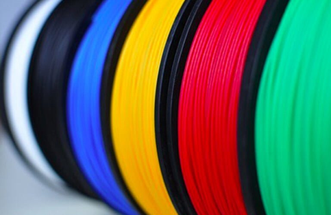

Oggi è disponibile una quantità incredibilmente vasta di materiali di stampa 3D per le diverse tecnologie di stampa 3D.
Dai materiali termoplastici ai metalli e alle ceramiche, dagli alimenti alle cellule organiche viventi e al cemento, è possibile stampare in 3D con quasi tutti i materiali.
La plastica rappresenta il materiale di stampa 3D più comune. Possiamo classificare i materiali termoplastici per la stampa 3D in tre tipi principali:
Sia gli hobbisti che i professionisti utilizzano spesso plastiche standard. Si tratta di PLA e ABS, facili da stampare in 3D. Come il nylon o il PETG, i tecnopolimeri sono più difficili da stampare e richiedono temperature di estrusione più elevate e, in genere, un telaio chiuso per proteggersi da correnti d'aria o sbalzi di temperatura.
I polimeri ad alte prestazioni come il PEEK sono privilegiati quando le parti devono resistere a temperature elevate, sostanze chimiche, umidità e altro ancora. Questi materiali per la stampa 3D costano di più e richiedono una stampante 3D ad alta temperatura.
I materiali più utilizzati, ci sono:
Per beneficiare dei vari vantaggi offerti da diversi tipi di materiali, è possibile stampare in 3D materiali compositi, che sono una miscela di due o più materiali. I materiali compositi possono includere elementi di base come il PLA riempito di legno, ma possono anche contenere materiali molto forti e resistenti come il nylon o il PEEK riempito di fibra di carbonio.
È persino possibile depositare lunghi filamenti di fibra direttamente durante il processo di stampa 3D, con l'attrezzatura giusta.
Il PLA è un filamento biodegradabile derivato da fonti naturali come mais o canna da zucchero. È il materiale più diffuso per stampanti FDM grazie alla sua facilità d’uso.
Termoplastico a base di petrolio e` resistente agli urti e alle alte temperature, usato anche per i mattoncini LEGO.
Materiale resistente, flessibile e sicuro per alimenti.
Combina la stampabilità del PLA con la robustezza dell’ABS.
Materiale tecnico resistente e flessibile, adatto per parti meccaniche e funzionali.
Combinano PLA con polvere di legno (bambù, betulla, sughero ecc.) per un’estetica naturale e lavorabile.
Composti con polveri metalliche (rame, bronzo, acciaio) miscelate al PLA per ottenere un aspetto simile al metallo.
Molti materiali termoplastici sono igroscopici: assorbono l’umidità, il che compromette la qualità della stampa. Per questo è consigliabile conservarli in contenitori ermetici o sacchetti sottovuoto con essiccanti.